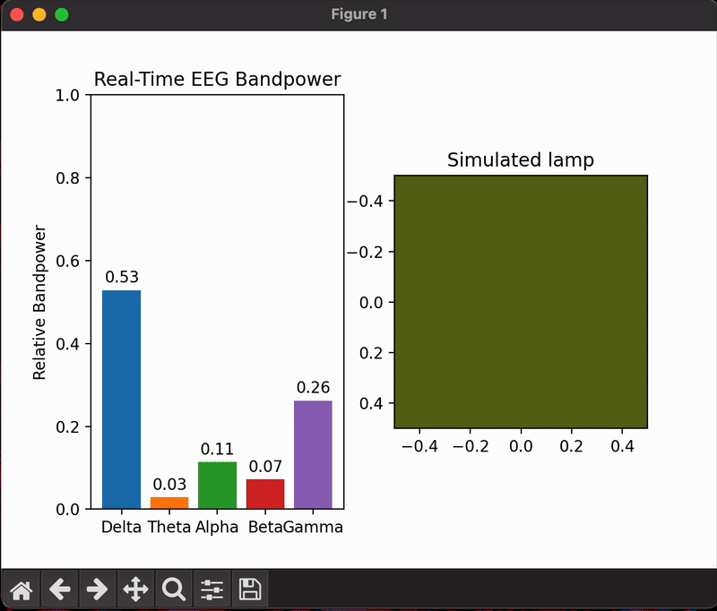
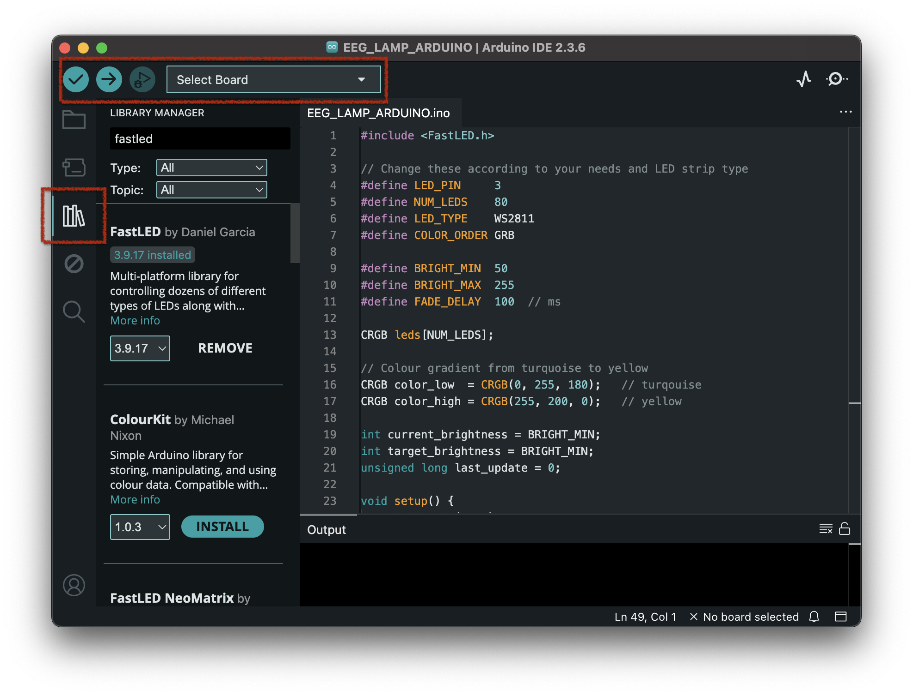
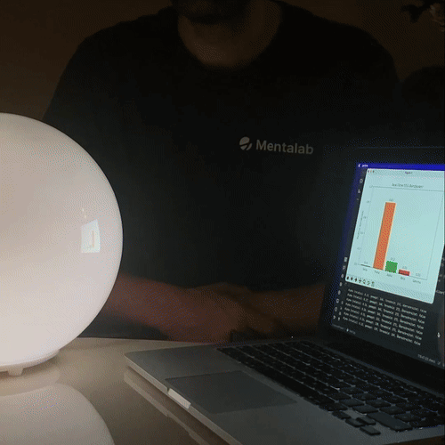

EEG to lamp brightness
Introduction
An EEG signal contains a multitude of frequencies which can give us an idea of what state the subject is in. For example, frequencies in the alpha range (8Hz - 13Hz) can indicate that the subject is relaxed and has their eyes closed. In this code example, the aforementioned phenomenon is creatively applied to control a lamp based on the subject’s relaxedness. If the subject relaxes and power in the alpha band increases, the LEDs increase in brightness and turn yellow.
If the power in the alpha band decreases, the LEDs dim and turn turquoise.
This application is intended to showcase how scientific concepts can be explored and applied in non-scientific contexts and particularly how data extracted from EEG can be used for individualised biofeedback in a novel and fun way.
Setting up the environment and dependencies
-
Set up an environment with Python version
3.12with conda and activate it:conda create -n eeg2lamp python=3.12 conda activate eeg2lamp -
Install
liblsl, which is required byexplorepy, via conda-forge:conda install -c conda-forge liblsl -
Install the dependencies via
pip:pip install explorepy matplotlib mne pyserial numpy scipy
Running the example
The code for this example, eeg2lamp.py for the Python script and EEG_LAMP_ARDUINO.ino for the Arduino sketch, can be found in examples/eeg2lamp inside the GitHub repository for explorepy:
Adapting the Python script to your needs
You can run the Python script in the environment you’ve set up by calling python -m eeg2lamp and supplying command line arguments according to your needs:
| Argument | Description | Required | Default |
|---|---|---|---|
|
The name of your device, i.e. |
yes |
- |
|
The sampling rate to set the device to |
no |
|
|
The port that the Arduino is connected to, i.e. |
no |
|
|
The frequency to use for the notch filter |
no |
|
|
The frequencies to use for the bandpass filter |
no |
|
|
Whether to add a second plot to the window that simulates the brightness and colour change |
no |
|
|
A file path to a |
no |
|
|
Whether to loop the |
no |
|
For example, to run the script with default values for the device Explore_ABCD and not connect to an Arduino or simulate a lamp:
python -m eeg2lamp -n Explore_ABCDAn example that additionally sets a Notch filter at 50.0Hz, a bandpass filter with a low cutoff of 3.0Hz and a high cutoff of 40.0Hz, connects to an Arduino on port /dev/cu.usbserial-1234 and also simulates a lamp in the plot:
python -m eeg2lamp -n Explore_ABCD -fn 50.0 -fbp 3.0 40.0 -p /dev/cu.usbserial-1234 --simulate-lampAn example that runs from a pre-recorded file sample/file.bdf instead and loops it when its end is reached:
python -m eeg2lamp -n Explore_ABCD -p /dev/cu.usbserial-1234 --simulate-lamp -f sample/file.bdf --loop
The script still expects a device name to be passed. This name is ignored later when the -f parameter is supplied.
|

The plot containing current bandpowers as bar plots and the expected lamp colour next to it.
Adapting the Arduino sketch to your needs
The supplied Arduino sketch was written with a specific LED strip in mind. In order to run the example for your setup, you need to know your LED strip type, how many LEDs it has and which data pin on the Arduino it is connected to. You need to change lines 4-6 to fit your needs:
#define LED_PIN 3
#define NUM_LEDS 80
#define LED_TYPE WS2811You can find the possible LED types for clockless LEDs in this documentation page. If you are using an LED with a clock, please refer to the FastLED documentation for how to properly connect and address it.
In our example, the colour ordering of the chipset was not RGB but GRB instead, hence line 7:
#define COLOR_ORDER GRBIf your LED strip’s chipset uses RGB ordering, you can remove this line. If it uses another kind of ordering, you can change this line to fit what your chipset uses. You can refer to this documentation page for the possible enum values. If you don’t know what ordering your LED strip’s chipset uses, you can either figure it out using trial and error or you can run FastLED’s calibration example to find out what ordering your chipset uses.
The colours the Arduino transitions between are defined in lines 16 and 17:
CRGB color_low = CRGB(0, 255, 180); // turqouise
CRGB color_high = CRGB(255, 200, 0); // yellowYou can change these to any two colours you want to transition between.
Running the Python script and the Arduino sketch
The easiest way to run the Arduino sketch is by using Arduino IDE 2.
Connect your Arduino, with the LED strip’s data-in pin connected to the Arduino’s data pin, to your computer with a USB cable. Then, open the Arduino IDE, open the EEG_LAMP_ARDUINO.ino sketch and select your board from the drop-down menu at the top.
Click on the library manager symbol in the left menu, search for FastLED and install it.
Finally, upload the sketch to the connected Arduino by clicking on the arrow button in the top menu.

The Arduino IDE with the relevant top menu items and library manager button on the left marked in red.
To launch the Python script, simply run it as outlined above and supply the port the Arduino is connected to with the -p parameter. The port is also listed in the drop-down menu in the Arduino IDE.
That’s it. If everything is connected properly, the LED strip is addressed correctly and your Explore device gets a good EEG signal from your head, you will see the LEDs react to your alpha bandpower in real-time.
If you need help with getting a good signal, please refer to the Lowering Impedance page.

The lamp, connected via Arduino to the PC running the Python script, increasing and decreasing its brightness according to increasing and decreasing alpha bandpower.
The alpha bandpower corresponds to the green bar plot.